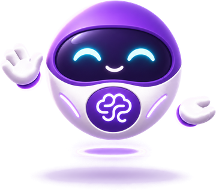

Hai, saya Nesty.

MindNestBuka pautan khas MindNest yang Claude berikan, sekali sahaja di phone ini. Lepas itu app ingat sendiri.
Satu baris satu perkara, sespesifik mungkin. Kepala boleh rehat lepas ni.
Ketik satu cabang. Yang lain senyap.